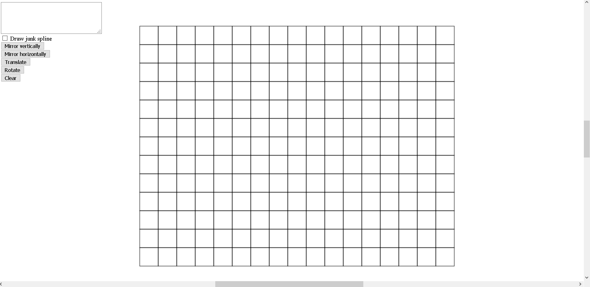
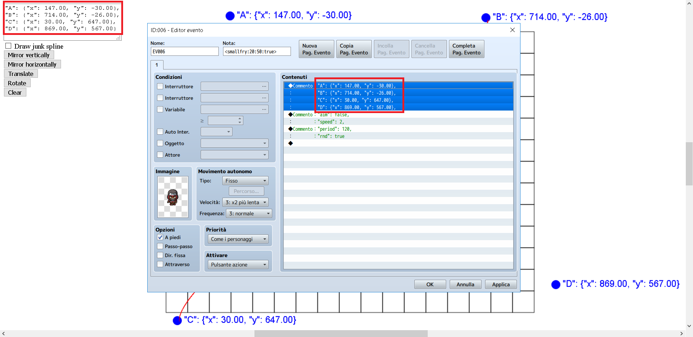

Splines are mathematical curves which describe smooth paths. The Catmull-Rom splines are among the most efficient and easy to use, since they only require eight parameters (four points) and very simple arithmetic operations.
Every enemy using a BHell.BHell_Mover_Spline mover (i.e. enemies derived from the BHell.BHell_Enemy_Spline) moves along a uniform Catmull-Rom spline and have among their parameters the four spline points.
The path travelled by spline enemies always has the two middle points as starting and finishing positions (i.e. an enemy will be generated at point B and move towards point C).
If A = B and C = D, the enemy path will be a straight line, otherwise it will have one or two curves, determined by the position of A and D, relative to B and C.
Important: A generator will always spawn a spline enemy at B, if you don't want the enemy to suddenly appear out of nowhere, you'll have to place point B outside the screen.
A spline enemy will stop once it reaches point C (it will continue shooting though), so most of the times you'll want point C to be outside the screen as well (so it's destroyed when it leaves the screen).
The default spline parameters are set so that an enemy will travel vertically (from top to bottom) at the center of the screen, more interesting paths need to be manually defined.
Since manually defining each point for a spline is a tedious task, a spline editor is available for developer's use.
The editor has a grid at the center which represents the visible area of the stage.

You can click on screen four times to place your spline points. Once you have placed the last one, the spline will be displayed.
You can now drag any of the points on screen to change your spline.
If you want (e.g. to make symmetric paths), you can transform your spline using the buttons.
Finally, you simply have to copy and paste the content from the textarea to a comment in your generator.
Note: Comments are parsed as JSON, so if you need to add more parameters, don't forget the comma at the end!
